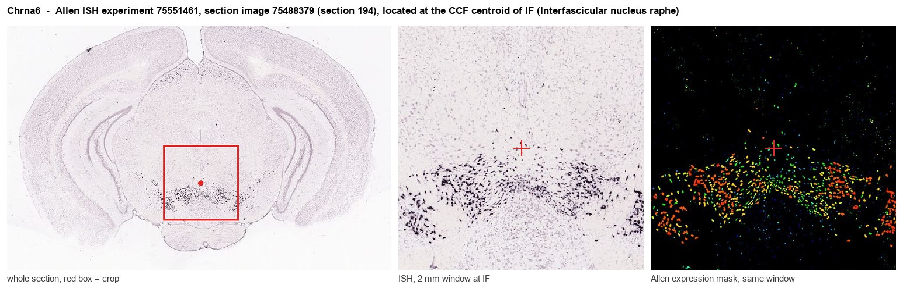
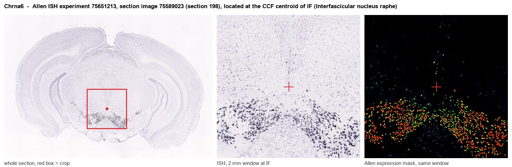
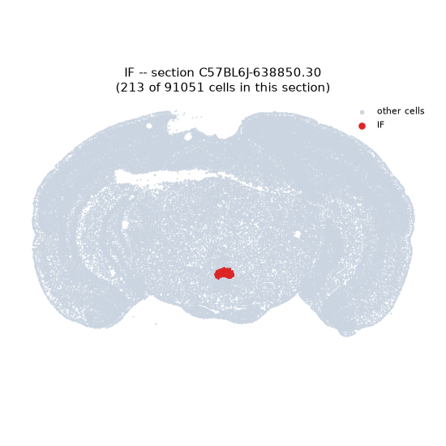
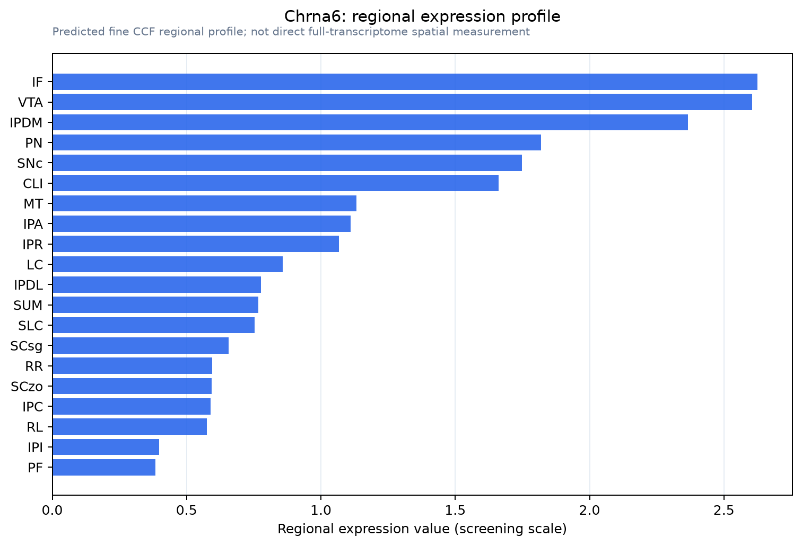

Chrna6
Neuronal acetylcholine receptor subunit alpha-6
Spatial tier: RESTRICTED · Class: ION_CHANNEL · Top region: IF (Interfascicular nucleus raphe) · Positive regions: 18/554
Function in IF: evidence, prediction, innovation
- Gene function
- CHRNA6 encodes the alpha-6 subunit of neuronal nicotinic acetylcholine receptors, ligand-gated cation channels assembled as pentamers. Alpha-6 partners with beta-2 and beta-3 (often with alpha-4) to form high-affinity, rapidly desensitising receptors, and it is blocked with high selectivity by the cone-snail peptide alpha-conotoxin MII. Its expression in the brain is almost entirely restricted to catecholaminergic neurons, where it mediates nicotine-evoked dopamine release.
- Region function
- The interfascicular nucleus raphe is a midline midbrain nucleus wedged between the fasciculi retroflexi; it contains dopaminergic neurons continuous with the VTA together with serotonergic raphe cells and projects to medial prefrontal cortex, nucleus accumbens shell and interpeduncular nucleus.
- Published in this region
- inferred No region-specific literature found. Azam et al. 2002 showed alpha-6 mRNA within midbrain dopamine neurons across the VTA and substantia nigra, a population continuous with the interfascicular nucleus, and functional work on alpha-6 has concentrated on VTA and substantia nigra somata and striatal terminals - Collo et al. 2018 on nicotine-induced structural plasticity, Liu et al. 2013 and Gao et al. 2019 on ethanol sensitivity - without isolating the interfascicular subnucleus.
- Predicted function
- Prediction: interfascicular dopamine neurons project preferentially to medial prefrontal cortex and accumbens shell rather than to dorsal striatum, so alpha-6 here is predicted to mediate a cortically biased arm of nicotine reinforcement that is pharmacologically separable from the classical VTA-to-accumbens-core pathway. Alpha-conotoxin MII infused into IF, or IF-restricted Chrna6 knockdown, is predicted to reduce nicotine-evoked prefrontal dopamine release and selectively decrease nicotine conditioned place preference at low doses while sparing high-dose aversion; conversely the gain-of-function Chrna6 L9S mouse should show exaggerated IF activation and hypersensitivity to nicotine reward.
- Innovation
- ★★★★☆ 4/5 Alpha-6 nicotinic receptors are heavily studied in VTA and striatum but nobody has separated the interfascicular population, even though alpha-conotoxin MII and dedicated mouse lines make the experiment straightforward.
- Tools
- Chrna6 knockout mice, the Chrna6 L9S gain-of-function line and Chrna6-eGFP (GENSAT) reporter; alpha-conotoxin MII and PIA, bPiDI and the alpha6beta2-selective antagonists; nicotine and varenicline; Dat-Cre and Th-Cre for cell-type restriction; GRAB-DA photometry in prefrontal cortex.
- References
Direct evidence located at the region

Allen ISH experiment 75551461, section image 75488379 (section 194): the section that contains the CCF centroid of Interfascicular nucleus raphe according to the Allen image-to-atlas alignment (reference_to_image), with a 2 mm window around that point. Left: whole section, red box = window. Middle: ISH signal. Right: Allen's expression-mask view of the same window. open this image in the Allen viewer

Allen ISH experiment 75651213, section image 75589023 (section 198): the section that contains the CCF centroid of Interfascicular nucleus raphe according to the Allen image-to-atlas alignment (reference_to_image), with a 2 mm window around that point. Left: whole section, red box = window. Middle: ISH signal. Right: Allen's expression-mask view of the same window. open this image in the Allen viewer
Direct spatial evidence

Regional expression figure

Predicted WMB × fine-CCF profile; not direct full-transcriptome spatial measurement.
Spatial profile
Evidence and specificity
- Evidence status
- PREDICTED_FINE
- Direct sources
- None; predicted localization only
- Exclusive threshold
- 12 positive regions out of 554
- Spatial specificity
- 0.425
- Top-region fraction
- 0.090
- Filter status
- PASS
Interpretation limits
- Cell-type-to-region projection is imputed expression, not direct spatial measurement.
- Adult reference atlases do not establish stability across age, sex, strain, state, or disease.
- Transcript abundance does not guarantee protein abundance or genetic-tool performance.